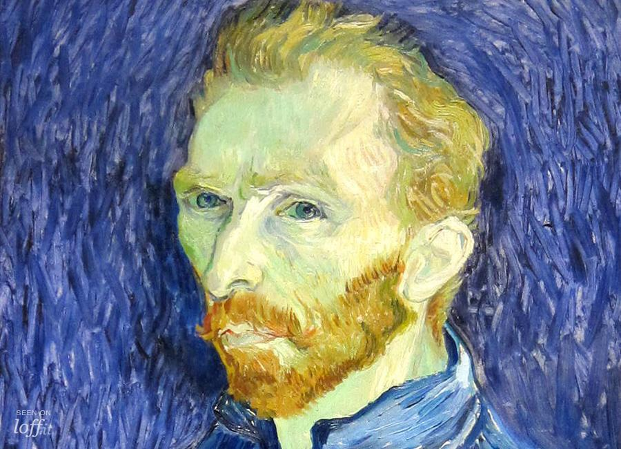
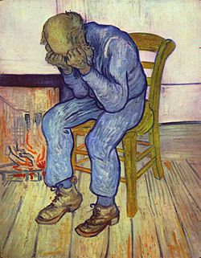

Vincent Willem van Gogh
(30 March 1853 - 29 July 1890)
Was a Post-Impressionist painter of Dutch origin whose work—notable for its rough beauty, emotional honesty, and bold color—had a far-reaching influence on 20th-century art. After years of painful anxiety and frequent bouts of mental illness, he died aged 37 from a gunshot wound, generally accepted to be self-inflicted (although no gun was ever found). His work was then known to only a handful of people and appreciated by fewer still.
Van Gogh began to draw as a child, and he continued to draw throughout the years that led up to his decision to become an artist. He did not begin painting until his late twenties, completing many of his best-known works during the last two years of his life. In just over a decade, he produced more than 2,100 artworks, consisting of 860 oil paintings and more than 1,300 watercolors, drawings, sketches, and prints. His work included self portraits, landscapes, still lifes, portraits as well as paintings of cypresses, wheat fields and sunflowers.

He spent his early adulthood working for a firm of art dealers, traveling between The Hague, London,
and Paris, after which he taught for a time in England at Isleworth and Ramsgate. One of his early
aspirations was to become a pastor, and from 1879 he worked as a missionary in a mining region in
Belgium, where he began to sketch people from the local community. In 1885, he painted his first
major work, entitled The Potato Eaters. His palette at the time consisted mainly of somber earth
tones and showed no sign of the vivid coloration that distinguished his later work. In March 1886,
he moved to Paris and discovered the French Impressionists. Later, he moved to the south of France
and was influenced by the strong sunlight he found there. His work grew brighter in color, and he
developed the unique and highly recognizable style that became fully realized during his stay in
Arles in 1888.

The extent to which his mental health affected his painting has been a subject of speculation since his death. Despite a widespread tendency to romanticize his ill health, modern critics see an artist deeply frustrated by the inactivity and incoherence brought about by his bouts of illness. According to art critic Robert Hughes, Van Gogh's late works show an artist at the height of his ability, completely in control and "longing for concision and grace".
The most comprehensive primary source for the understanding of Van Gogh as an artist is the collection of letters between him and his younger brother, art dealer Theo van Gogh. They lay the foundation for most of what is known about the thoughts and beliefs of the artist. Theo provided his brother with both financial and emotional support. Their lifelong friendship, and most of what is known of Van Gogh's thoughts and theories of art, is recorded in the hundreds of letters they exchanged between 1872 and 1890: more than 600 from Vincent to Theo and 40 from Theo to Vincent.
Although many are undated, art historians have generally been able to put them in chronological order. Problems remain, mainly in dating those from Arles, although it is known that during that period, Van Gogh wrote 200 letters to friends in Dutch, French and English. The period when Vincent lived in Paris is the most difficult for historians to analyze because the brothers lived together and had no need to correspond.
In addition to letters to and from Theo, other surviving documents include those to Van Rappard, Émile Bernard, Van Gogh's sister Wil and her friend Line Kruysse. The letters were first annotated in 1913 by Theo's widow Johanna van Gogh-Bonger who explained that she published them with "trepidation" because she did not want the drama in the artist's life to overshadow his work. Van Gogh himself was an avid reader of other artists' biographies and expected their lives to be in keeping with the character of their art.